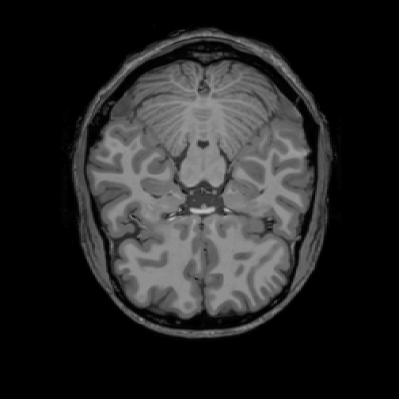
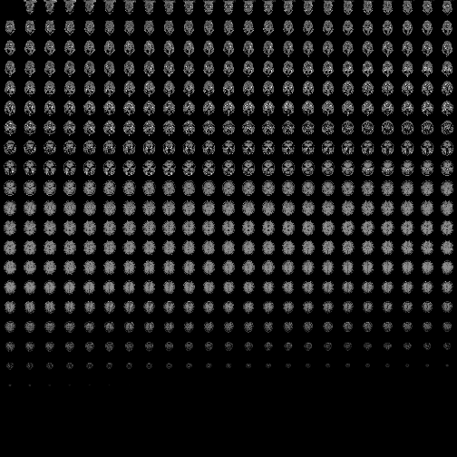
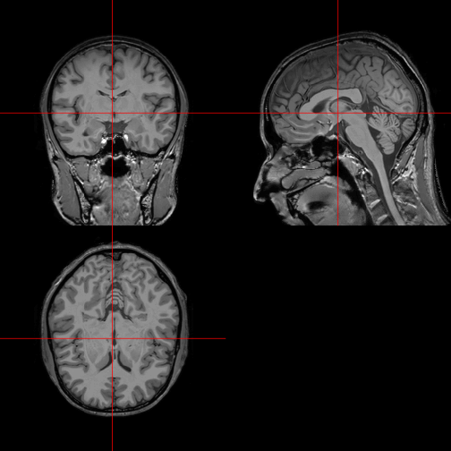
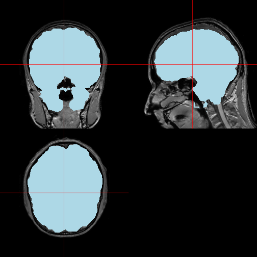
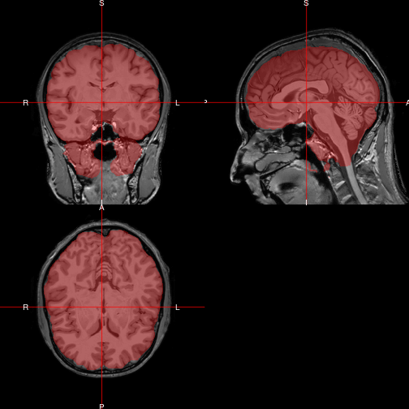
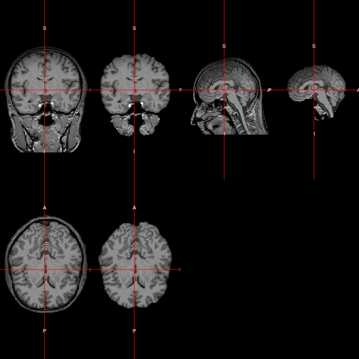
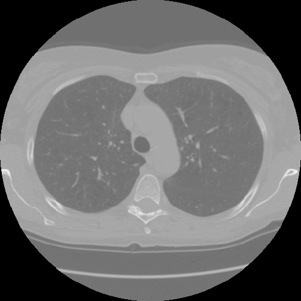
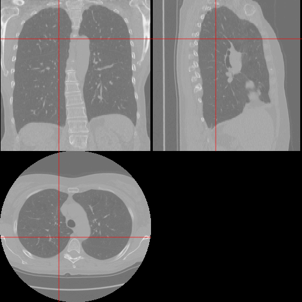

Visualization of MRI data in R
Lately I was getting a little bored with genomic data (and then TCGA2STAT started to give me a segfault on my university’s high performance computing facility too  ). So I decided to analyze some brain imaging data that I had lying around instead. The first step is to do some visual data exploration. In this blog post I present some functions which I was able to find for MRI visualization in R, and which I found to be very useful. All functions presented below presuppose an image in the NIfTI data format as input, and are very user-friendly.
). So I decided to analyze some brain imaging data that I had lying around instead. The first step is to do some visual data exploration. In this blog post I present some functions which I was able to find for MRI visualization in R, and which I found to be very useful. All functions presented below presuppose an image in the NIfTI data format as input, and are very user-friendly.
Example MRI data
A T1 image obtained from http://www.jannin.org/mritemplate/ (this one to be precise) is used for example purposes in what follows. We can read it into R using the library oro.nifti.
library(oro.nifti)
img <- readNIfTI("Template-T1-U8-RALPFH-BR.nii.gz", reorient = FALSE)
class(img)
## [1] "nifti"
## attr(,"package")
## [1] "oro.nifti"
dim(img)
## [1] 182 512 512
Visualize brain slices with image
The library oro.nifti provides a version of the generic function image. It allows to plot slices of the brain. The following plots the 225th axial slice of img.
image(img, z = 225, plot.type = "single")

It can also be used to draw all available slices in a single plot next to each other (but that turns out not very helpful in this case).
image(img)

Display an orthographic projection with orthographic
The function orthographic, also from the library oro.nifti, gives an excellent overview of the 3D structure of the brain in two dimensions.
orthographic(img)

In order to indicate or emphasize a certain region of the brain, orthographic can be used to display a mask on top of the original image. For example, the following code chunk removes the skull from the MRI data (you need the FSL software and the fslr R package for this), and then plots the extracted brain as a mask on top of the original image.
# skull stripping using FSL's Brain Extraction Tool (BET)
library(fslr)
img_bet <- fslbet(infile = img, retimg = TRUE)
# plotting extracted brain as a mask on top of original data
mask <- img
in_mask <- img_bet > 0
mask[in_mask] <- 1
mask[!in_mask] <- NA
orthographic(x = img, y = mask, col.y = "lightblue")

(Notice that the extracted brain does not fit the original image quite perfectly, but I will not pursue further improvements to the skull stripping at this point, in order to concentrate on visualization alone.)
Polish orthographic displays with ortho2
The R package neurobase provides the function ortho2 as an improved version of orthographic. Here we use it to overlay the brain as a semi-transparent layer on top of the original image.
library(scales)
ortho2(img, mask, col.y = alpha("red", 0.3))

Show two orthographic displays side by side with double_ortho
The function double_ortho can be used to display two orthographic brain images of the same dimensions next to each other. As a quick demonstration we can look at the original image and the extracted brain side by side.
brain <- img
brain[!in_mask] <- NA
double_ortho(img, brain)

Beyond MRI
Of course the same functions can be repurposed for other types of imaging data. For example I can look at CT images of the lung, where the data is taken from a current kaggle.com competition.
library(oro.dicom)
# generate a NIfTI image from a collection of DICOMs
all_slices <- readDICOM("./00cba091fa4ad62cc3200a657aeb957e/")
nii <- dicom2nifti(all_slices)
An oro.nifti::image plot of the lung:
image(nii, z = 100, plot.type = "single")

An oro.nifti::orthographic plot of the lung:
orthographic(nii, xyz = c(200, 220, 100))
